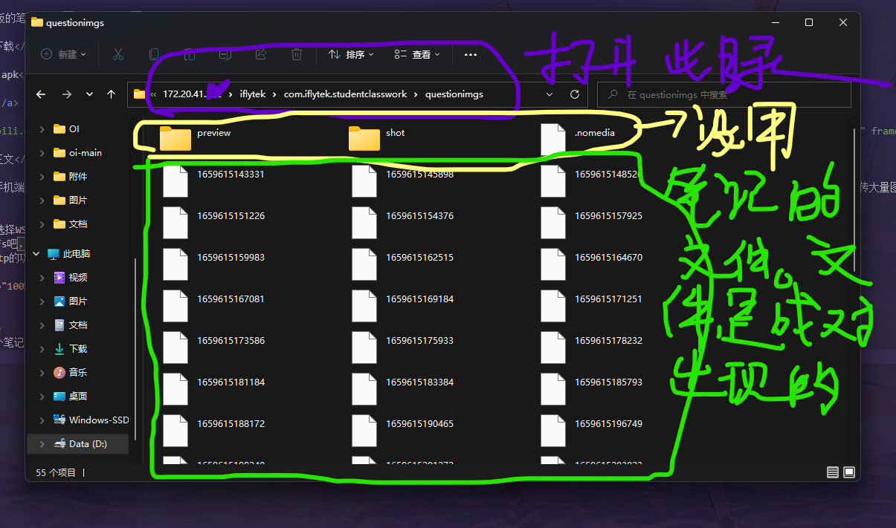
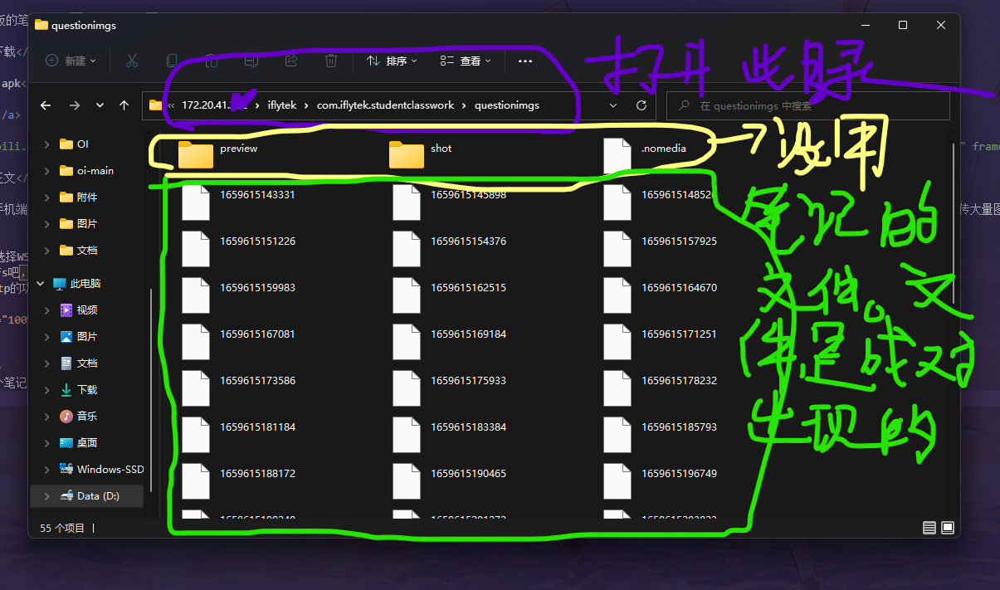

教你如何用平板的笔记传图~（By Zchared）
1-资源下载
iflytek.apk
_File.exe
备用链接（如果_File.exe的链接404）->百度网盘 提取码：file
2-教程正文
-1.说明：这里的教程也可以通过手机端来实现，只不过因为本人写的_File.exe只能在PC上运行，所以本文就以PC端来进行演示。手机端与之类似。除此之外，如果图片少的话，完全可以自己手动，_File.exe只是为了在传大量图片的时候省省力气。
0.因为是apk格式的程序，你可以选择WSA（Windows Subsystem for Android），也可以使用现在众多的安卓模拟器，只要是能实现文件ftp或其他传输方式的均可。
1.首先进行安装WSA。教程自己bdfs吧，我也懒得再安装一次了。
由于WSA没有自带与Windows实现ftp的功能，所以我们需要这样的软件。比如（ES文件浏览器）安装完成就是有这样两个东西，点击就可以打开了。
2.确定图片数目，这里设为n
3.在那个课堂互动中登陆后创建n个笔记（我知道图片多的时候确实有点累人）
4.看图片，打开ftp的功能，按图片操作。

5.把笔记的文件Copy下来（共2*n个文件），粘贴到本地的一个文件夹里面，要求路径全英文，不然_File.exe会炸的！（其实是我懒得搞UTF-8的兼容）
6.在那个文件夹中，放入你的n个图片（图片文件名无中文！！！图片文件名无中文！！！图片文件名无中文！！！建议以字母开头，其他方法只要图片文件名开头的字符的ASCII值大于9的ASCII值即可。），和_File.exe，经文件资源管理器的按名称递增的排序后，效果如图所示。（不是的话，就再仔细阅读一下前面的步骤）
7.运行_File.exe，按图中的方法进行输入（文件夹名要求不含中文），按下回车运行（大约1s不到就可以了）。会产生一个新的文件夹，里面就是笔记了。全部再Copy回去，就可以再课堂互动里面看到笔记了。之后再上传笔记就OK了
0.因为是apk格式的程序，你可以选择WSA（Windows Subsystem for Android），也可以使用现在众多的安卓模拟器，只要是能实现文件ftp或其他传输方式的均可。
1.首先进行安装WSA。教程自己bdfs吧，我也懒得再安装一次了。
由于WSA没有自带与Windows实现ftp的功能，所以我们需要这样的软件。比如（ES文件浏览器）安装完成就是有这样两个东西，点击就可以打开了。
2.确定图片数目，这里设为n
3.在那个课堂互动中登陆后创建n个笔记（我知道图片多的时候确实有点累人）
4.看图片，打开ftp的功能，按图片操作。

5.把笔记的文件Copy下来（共2*n个文件），粘贴到本地的一个文件夹里面，要求路径全英文，不然_File.exe会炸的！（其实是我懒得搞UTF-8的兼容）
6.在那个文件夹中，放入你的n个图片（图片文件名无中文！！！图片文件名无中文！！！图片文件名无中文！！！建议以字母开头，其他方法只要图片文件名开头的字符的ASCII值大于9的ASCII值即可。），和_File.exe，经文件资源管理器的按名称递增的排序后，效果如图所示。（不是的话，就再仔细阅读一下前面的步骤）
7.运行_File.exe，按图中的方法进行输入（文件夹名要求不含中文），按下回车运行（大约1s不到就可以了）。会产生一个新的文件夹，里面就是笔记了。全部再Copy回去，就可以再课堂互动里面看到笔记了。之后再上传笔记就OK了
DLC-一些常见错误结果
1.笔记封面与内容不一致：
Solution:检查复制的时候/创建笔记的时候，笔记文件是不是2n个，笔记是不是n个，图片是不是n个。各个文件的命名是否都符合上文中的要求
2._File.exe 杀毒软件报病毒
s*杀毒软件瞎叫是吧，找牛马把这杀毒软件囸死就不乱叫了。这软件是 开源 的，不放心就自己下载下来编译吧。（我创造的东西我能不了解吗？？？）
3._File.exe找不到文件路径
试着将系统语言改为中文简体，并且确保路径为全英文，检查是否缺失文件
... ...还有其他问题可以去问我。。。